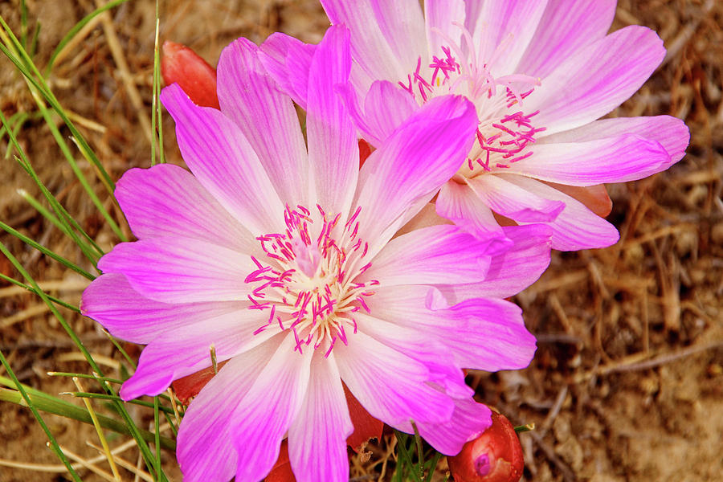
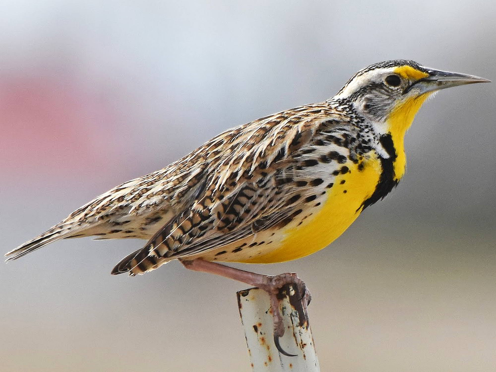
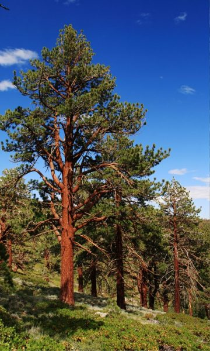

Montana is the fourth largest U.S. state by area, behind Alaska, Texas and California, but with an average of just six people per square mile, it is one of the country’s least densely populated states. Although the name Montana is derived from the Spanish montaña (“mountain” or “mountainous region”), it has an average elevation of only 3,400 feet, the lowest among the Rocky Mountain states. Montana is home to the Little Bighorn Battlefield National Monument, which memorializes the historic 1876 battle between the Sioux tribe and U.S. Army, often referred to as “Custer’s Last Stand.” Yellowstone National Park, located in southern Montana and northern Wyoming, was the first national park established in the United States
| Date of Statehood | Capital | Population | Size |
|---|---|---|---|
| November 8, 1889 | Helena | 1.09 million | 147,028 square miles |
Oro y Plata (“Gold and Silver”)
Bitterroot
Western Meadow Larkk
Ponderosa Pine
Interesting facts